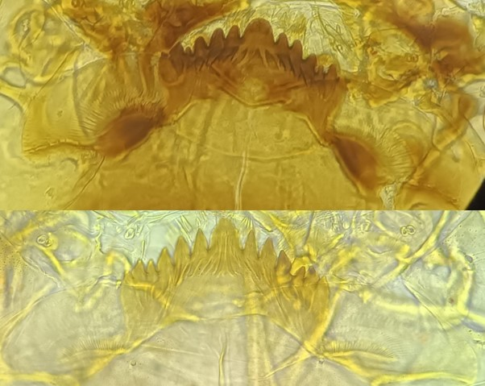
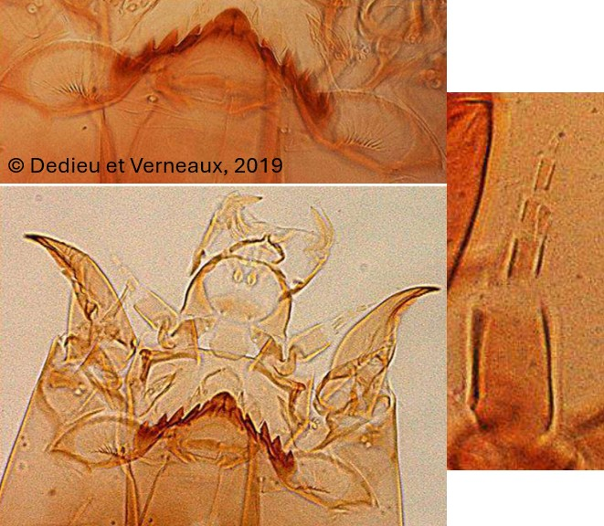
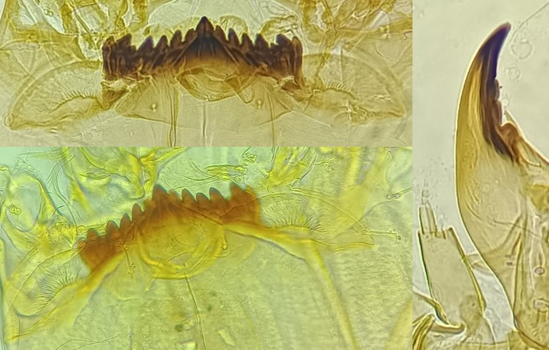

Tribu des Chironomini
Mentum convexe, plaques ventromentales courbes, dents les plus externes du mentum forment un groupe distinct



Dent médiane unique (ou légèrement crantée sur les côtés). Plaques ventromentales jamais
crénelées.
Capsule céphalique souvent sombre
Mentum avec dent médiane largement arrondie (ou partiellement trifide). Les dents latérales sont
affaissées vers la dent centrale donnant au mentum un aspect pentu.
Antenne : Organe annulaire dans la partie proximale du segment basal.
Dent médiane distinctement trifide. Les dents latérales sont faiblement affaissées donnant au
mentum une pente plus douce
Antenne : Organe annulaire sur à la base du segment basa